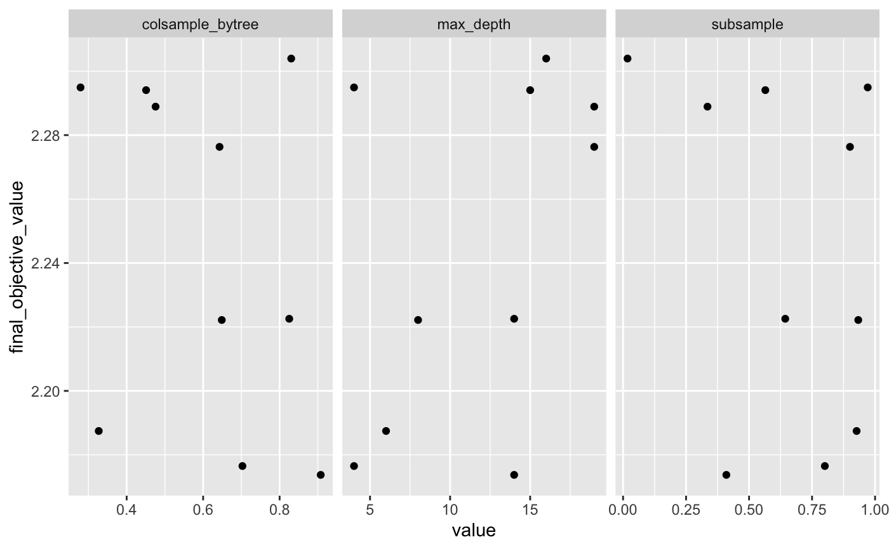
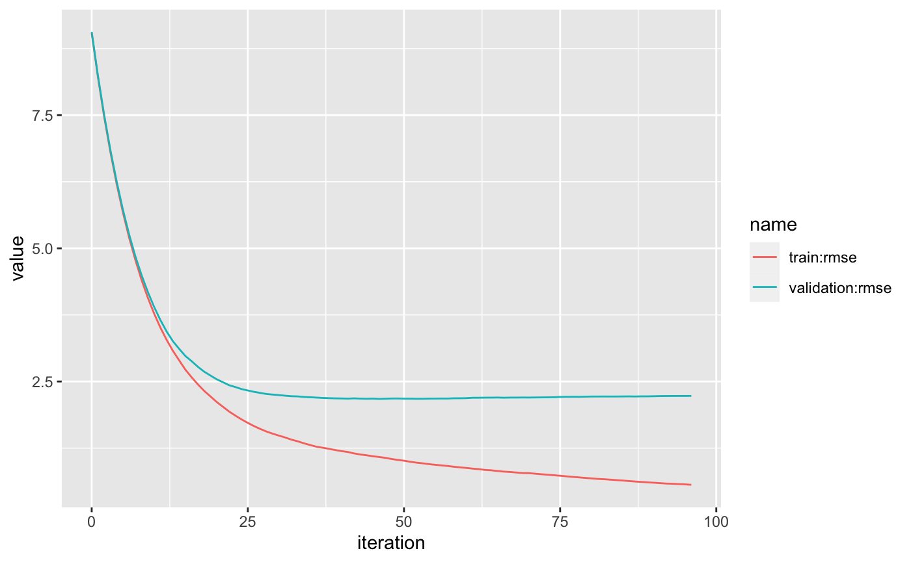

In this introduction, we’ll provide a step-by-step guide to training models with AWS Sagemaker using the sagemaker R package.
We are going to train and tune an xgboost regression model on the sagemaker::abalone dataset, analyze the hyperparameters, and make new predictions.
The tuning interface is similar to the caret package. We’ll
choose a model
define a hyperparameter grid
set the training and validation data
I’ll be building a regression model on the built-in abalone dataset, taken from UCI dataset database.
library(sagemaker)
library(rsample)
#> Loading required package: tidyr
library(dplyr)
#>
#> Attaching package: 'dplyr'
#> The following objects are masked from 'package:stats':
#>
#> filter, lag
#> The following objects are masked from 'package:base':
#>
#> intersect, setdiff, setequal, union
library(ggplot2)
library(tidyr)
sagemaker::abalone
#> # A tibble: 4,177 x 11
#> rings length diameter height whole_weight shucked_weight viscera_weight
#> <dbl> <dbl> <dbl> <dbl> <dbl> <dbl> <dbl>
#> 1 15 0.455 0.365 0.095 0.514 0.224 0.101
#> 2 7 0.35 0.265 0.09 0.226 0.0995 0.0485
#> 3 9 0.53 0.42 0.135 0.677 0.256 0.142
#> 4 10 0.44 0.365 0.125 0.516 0.216 0.114
#> 5 7 0.33 0.255 0.08 0.205 0.0895 0.0395
#> 6 8 0.425 0.3 0.095 0.352 0.141 0.0775
#> 7 20 0.53 0.415 0.15 0.778 0.237 0.142
#> 8 16 0.545 0.425 0.125 0.768 0.294 0.150
#> 9 9 0.475 0.37 0.125 0.509 0.216 0.112
#> 10 19 0.55 0.44 0.15 0.894 0.314 0.151
#> # … with 4,167 more rows, and 4 more variables: shell_weight <dbl>,
#> # sex_F <dbl>, sex_I <dbl>, sex_M <dbl>The built-in hyperparameter tuning methods with AWS Sagemaker requires a train/validation split. Cross-validation is not supported out of the box.
We can quickly split the data with rsample:
The training data needs to be uploaded to an S3 bucket that AWS Sagemaker has read/write permission to. For the typical AWS Sagemaker role, this could be any bucket with sagemaker included in the name.
We’ll use the sagemaker::write_s3 helper to upload tibbles or data.frames to S3 as a csv.
write_s3(analysis(abalone_split), s3(s3_bucket(), "abalone-train.csv"))
write_s3(assessment(abalone_split), s3(s3_bucket(), "abalone-test.csv"))You can also set a default bucket with options(sagemaker.default.bucket = "bucket_name") for sagemaker::s3_bucket.
Then we’ll save the paths to use in tuning:
We can get more details about the tuning jobs by looking at the logs:
logs <- sagemaker_tuning_job_logs(tune)
logs %>%
glimpse()
#> Observations: 10
#> Variables: 9
#> $ final_objective_value <dbl> 2.22218, 2.28891, 2.27633, 2.30395…
#> $ training_elapsed_time_seconds <dbl> 63, 61, 63, 72, 62, 47, 54, 63, 62…
#> $ training_end_time <dttm> 2019-11-15 02:10:46, 2019-11-15 0…
#> $ training_job_name <chr> "xgboost-191114-1954-010-1308e18b"…
#> $ training_job_status <chr> "Completed", "Completed", "Complet…
#> $ training_start_time <dttm> 2019-11-15 02:09:43, 2019-11-15 0…
#> $ colsample_bytree <dbl> 0.6487743, 0.4756056, 0.6429051, 0…
#> $ max_depth <dbl> 8, 19, 19, 16, 4, 4, 14, 15, 14, 6
#> $ subsample <dbl> 0.93328062, 0.33505527, 0.90047042…From here, we can investigate the training deeper:
logs %>%
select(final_objective_value, colsample_bytree:subsample) %>%
pivot_longer(colsample_bytree:subsample) %>%
ggplot(aes(value, final_objective_value)) +
geom_point() +
facet_wrap(~name, scales = "free_x")
We can also see the individual jobs logs, to track the difference between the train/validation set. This might be useful for advanced model tuning.
Note that tune$model_name is the name of the best model found during training.
job_logs <- sagemaker_training_job_logs(tune$model_name)
job_logs
#> # A tibble: 98 x 3
#> iteration `train:rmse` `validation:rmse`
#> <dbl> <dbl> <dbl>
#> 1 0 9.04 9.06
#> 2 1 8.21 8.24
#> 3 2 7.47 7.50
#> 4 3 6.80 6.84
#> 5 4 6.21 6.25
#> 6 5 5.67 5.72
#> 7 6 5.20 5.26
#> 8 7 4.78 4.85
#> 9 8 4.40 4.49
#> 10 9 4.07 4.18
#> # … with 88 more rowsjob_logs %>%
pivot_longer(`train:rmse`:`validation:rmse`) %>%
ggplot(aes(iteration, value, color = name)) +
geom_line()
The AWS Sagemaker API supports two predictions modes: real-time endpoint and batch inference.
Real-time opens a persistent web-endpoint for predictions. Deploying takes a few minutes.
Then make new predictions on tibbles or data.frames, using the standard predict generic.
Once deployed, the endpoint has a subsecond latency.
Make sure to delete the endpoint when you are done to avoid charges.
You can also make batch predictions from data saved in S3. The batch method will write the predictions as a csv in an S3 folder.
s3_output_path <- batch_predict(
tune,
s3_input = s3(s3_bucket(), "abalone-inference.csv"),
s3_output = s3(s3_bucket(), "abalone_predictions")
)We can use the sagemaker::read_s3 method to easily read csv data from S3.